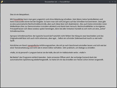
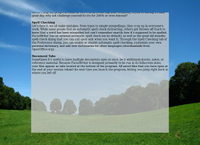

FocusWriter
Dieser Artikel wurde für die folgenden Ubuntu-Versionen getestet:
Ubuntu 16.04 Xenial Xerus
Ubuntu 14.04 Trusty Tahr
Zum Verständnis dieses Artikels sind folgende Seiten hilfreich:
Aktivieren eines PPAs, optional
Ein einzelnes Paket installieren, optional
Der auf der Grafikbibliothek Qt basierende plattformübergreifende FocusWriter  ist ein nützliches Werkzeug für diejenigen, die sich intensiv mit dem kreativen Schreiben von Texten beschäftigten möchten. Im Gegensatz zu einer herkömmlichen Textverarbeitung soll möglichst nichts von der eigentlichen Tätigkeit ablenken, schließlich geht es um Texterstellung. Also werden Menüs, Symbolleisten und anderes konsequent ausgeblendet. Das Programm simuliert quasi den Umgang mit einer klassischen Schreibmaschine – auf Wunsch inklusive der typischen Geräuschkulisse (alternativ kann Ambient Noise genutzt werden).
ist ein nützliches Werkzeug für diejenigen, die sich intensiv mit dem kreativen Schreiben von Texten beschäftigten möchten. Im Gegensatz zu einer herkömmlichen Textverarbeitung soll möglichst nichts von der eigentlichen Tätigkeit ablenken, schließlich geht es um Texterstellung. Also werden Menüs, Symbolleisten und anderes konsequent ausgeblendet. Das Programm simuliert quasi den Umgang mit einer klassischen Schreibmaschine – auf Wunsch inklusive der typischen Geräuschkulisse (alternativ kann Ambient Noise genutzt werden).
Statistiken und die Angabe eines "täglichen Ziels" helfen bei der Kontrolle des geplanten Arbeitspensums. Die Programmoberfläche ist mehrsprachig ausgelegt. Der Quelltext ist frei verfügbar (Open Source) und der Programmautor Graeme Gott freut sich über jede Spende.
PS: wer noch ein altes Notebook (ab 512 MB) hat, das für die aktuellen Linux-Distributionen zu langsam ist, kann sich in Kombination mit einem sparsamen Desktop (siehe Eigene Desktopumgebung) eine prima "Reiseschreibmaschine" basteln.
Installation¶
 Das Programm ist seit Ubuntu 11.04 in den offiziellen Paketquellen enthalten. Es muss lediglich das folgende Paket installiert [1] werden:
Das Programm ist seit Ubuntu 11.04 in den offiziellen Paketquellen enthalten. Es muss lediglich das folgende Paket installiert [1] werden:
focuswriter (universe)
 mit apturl
mit apturl
Paketliste zum Kopieren:
sudo apt-get install focuswriter
sudo aptitude install focuswriter
Ab Version 1.3.3 wird für das optionale Schreibmaschinengeräusch ein weiteres Paket benötigt:
libsdl-mixer1.2 (universe)
mit apturl
Paketliste zum Kopieren:
sudo apt-get install libsdl-mixer1.2
sudo aptitude install libsdl-mixer1.2
PPA¶
Wer die jeweils aktuellste Version nutzen möchte, kann das Programm aus dem "Personal Package Archiv" (PPA) [2] des Entwicklers installieren. Unterstützt werden allerdings nur Ubuntu 14.04 oder neuer.
Adresszeile zum Hinzufügen des PPAs:
ppa:gottcode/gcppa
Hinweis!
Zusätzliche Fremdquellen können das System gefährden.
Ein PPA unterstützt nicht zwangsläufig alle Ubuntu-Versionen. Weitere Informationen sind der  PPA-Beschreibung des Eigentümers/Teams gottcode zu entnehmen.
PPA-Beschreibung des Eigentümers/Teams gottcode zu entnehmen.
Damit Pakete aus dem PPA genutzt werden können, müssen die Paketquellen neu eingelesen werden.
Nach dem Aktualisieren der Paketquellen erfolgt die Installation wie oben angegeben.
Bedienung¶
 Die Menüleiste und eine Statusleiste für die Statistik erscheinen automatisch, wenn sich der Mauszeiger dem oberen bzw. unteren Bildschirmrand nähert. Gespeichert wird beim Beenden des Programms selbstständig. Das Standardformat ist "Nur-Text" (plain-text). Auf Wunsch kann auch Rich Text (.rtf) oder OpenDocument (.odt) verwendet werden, wodurch grundlegende Formatierungen wie fett, kursiv oder unterstrichen etc. möglich sind.
Mit der Tastenkombination Strg + M wird das Programmfenster minimiert. F11 schaltet zwischen der Darstellung als Fenster und dem Vollbildmodus um.
Mehrere Texte können bei Bedarf nebeneinander bearbeitet werden. Zum Wechseln zwischen den Texten werden Reiter (Tabs) verwendet. Alle geöffneten Dateien lassen sich gemeinsam als "Session" abspeichern und wieder öffnen.
Konfiguration¶
 Diese erfolgt über den Menüpunkt "Einstellungen" und ist in verschiedene Punkte untergliedert.
Diese erfolgt über den Menüpunkt "Einstellungen" und ist in verschiedene Punkte untergliedert.
Themen¶
Hiermit kann die Farbgebung (Textfarbe, Hintergrund) des Programmfensters sowie die Schriftart und -größe beeinflusst werden.

Hintergrundbild¶
Das Programm bietet auch die Möglichkeit, ein Hintergrundbild anzuzeigen. Wer also beispielsweise eine Heimatgeschichte schreiben möchten, kann sich durch einen thematisch passenden Hintergrund (siehe Abbildung) inspirieren lassen. Allerdings ist ein transparenter Textbereich nur mit einem aktiven Composite-Manager möglich.
Wörterbücher¶
Unter Ubuntu werden automatisch die bereits installierten Wörterbücher als Rechtschreibhilfe zur Auswahl angeboten. Ansonsten installiert man sich die gewünschten (hunspell-...) aus den Paketquellen nach. Prinzipiell sind alle Wörterbücher  von Openoffice bzw. LibreOffice geeignet.
von Openoffice bzw. LibreOffice geeignet.
Tägliches Ziel¶
Zur Kontrolle, inwieweit man ein persönliches Arbeitspensum bereits erfüllt, dient das "daily goal". Hier definiert man – pro Tag – entweder die Zeit in Minuten, die man mit der Texterstellung verbringen oder die Anzahl Wörter, die man schaffen möchten.
Statistik¶
Über eine Werkzeugleiste lassen sich statistische Angaben zum Text anzeigen. Gezählt werden auf Wunsch:
Zeichen
Wörter
Absätze
Seiten
Zusätzlich lässt sich einstellen, aus wie vielen Wörtern und Zeilen eine Seite besteht.
Problembehebung¶
Touchpad abschalten¶
Insbesondere auf Notebooks können versehentliche Berührungen des Touchpads enorm aufhalten. Ein solches lässt sich zwar auf unterschiedliche Weise konfigurieren bzw. abschalten, in Kombination mit FocusWriter ist jedoch TouchFreeze perfekt geeignet. Das kleine grafische Programm basiert ebenfalls auf Qt und deaktiviert das Tapping, solange der Benutzer eine Eingabe auf der Tastatur tätigt.
Ein fertiges .deb-Paket ist noch in den Paketquellen von Ubuntu 10.04 enthalten: touchfreeze_0.2.4  . Man lädt es passend zur eigenen Systemarchitektur herunter und installiert es manuell [3].
. Man lädt es passend zur eigenen Systemarchitektur herunter und installiert es manuell [3].
Links¶
Alternativen zu FocusWriter:
PyRoom - in den offiziellen Paketquellen enthalten
oStorybook
- Java-Software für SchriftstellerKreative Schreibprogramme
- Blogbeitrag, 03/2008
Notizen
 ergänzende Programme
ergänzende ProgrammeSchreibtrainer
Erlernen des effizienten und schnellen Schreibens mit einer Computertastatur
- Erstellt mit Inyoka
-
 2004 – 2017 ubuntuusers.de • Einige Rechte vorbehalten
2004 – 2017 ubuntuusers.de • Einige Rechte vorbehalten
Lizenz • Kontakt • Datenschutz • Impressum • Serverstatus -
Serverhousing gespendet von